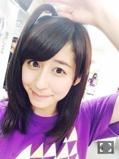
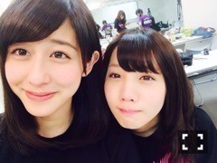

| 2014/06 12 Thu | 斎藤ちはる あと少し(´>∀<｀)ゝ |
ちはるーむへようこそヽ(^^)ﾉ
いま折り返し地点をすぎ、終盤へ向かう時期ですが、
スランプに陥って
なかなか二幕に出ることができません。。
悔しいです。
今までには
ロザリオ役、
エステル役2回、
アンサンブルのメグ、
アンサンブルのエリザベート
侍女2
を演じさせていただきました！
すごく嬉しかったし、やっぱり舞台っていいなって思いました(o^^o)
残りの期間、あとちょっとだし
やっぱり二幕に出たいよ。。
頑張らなきゃ。

2幕出れなかった子たちで
3幕ではたまにこんな髪型してます(｡-_-｡)
みんなでやれば怖くない。的な。笑
レアだよレア！！笑
今日で10役制覇が3人に増えましたね！
かっこいい！
私ももっとチャンスがあったり
自信があればやりたかったな。。
でもでも、私は私らしく頑張ります！！
人を笑わせるのが大好き！
笑ってる顔をみること、声を聞くのが大好き！
最初の勢いを取り戻す！！
そして今日は映像公演、
渋谷PARCO劇場にて行われた
「16人のプリンシパル」7日目
を見てきました！！
可愛かった！！♡
なんだかみんな
幼くて、全力で、から回って、自分に素直だった気がするよ。
振り返るのは怖くもあり、楽しみでもある。
(モバメと同じこと言っちゃったよ！笑)
また、今回のプリンシパルも振り返る時がくるのかなあ。。？
その時は、今よりもっと成長してる自分自身でありたい！
そんな自分になれるように
明日からも頑張ります！！！

生駒14位の瞬間。笑
涙の全てを拭き取れなかったこの顔。笑(｡-_-｡)
生駒おめでとう！！
そして玲奈さん5位おめでとうございます！
ばいるんっ
るんるんっ
ちはるんっ
(´>∀<｀)ゝ